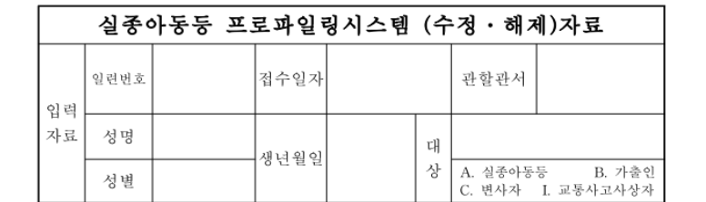

22일 장미란 씨로 오보난 다른 실종자 기사

장미란 씨의 실종 초기 수사를 담당한 부 모 경장은, 지난 7월 2일 남성 실종자 가족의 신고를 받았습니다.
부 경장은 가족에게 “전화 통화가 됐고, 가족에게 알리길 거부했다”는 취지로 설명한 것으로 파악됐습니다.
하지만 실종 신고 50일만인 오늘(22일) 오전 남성 실종자는 숨진 채 발견됐습니다. 경찰은 타살 등 범죄 혐의점은 없는 것으로 보고 있습니다. (중략)
경찰은 해당 자료를 삭제한 것은 아니며, 실종 사건 관리 대상에서 해제한 것이라고 설명했습니다.
부 경장은 실종자가 스스로 거처를 알리고 싶어하지 않은 상황으로 허위 보고해 실종 사건 관리 대상에서 제외한 것으로 보입니다.
https://n.news.naver.com/article/056/0012242622
댓글
수집 당시 댓글 4개
고등어와저등어 · 1 일 전
경찰 인력이 부족한가
morry · 1 일 전
범인이랑 뭔가 있음 vs 그냥 귀찮아서 후자가 시발 더 무서울거같음
Rldydhd · 22 시간 전
ㄹㅇ 걍 시발 직무유기하는거잖슴?
개붕야호 · 21 시간 전
뭐냐고진짜 ㄷㄷㄷ